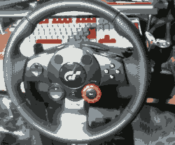

金欠でも大丈夫、苦行ドライブの始めかた2
-ＹＡＭＡＵＣＨＩの野望-
あなたは[2][1][4][7][4][8][3][6][4][7]人目の訪問者ですこの記事は「散歩・徒歩・苦行 Advent Calendar 2023」の8日目です。
7日目の記事はgottiさんの「金欠でも大丈夫、苦行ドライブの始めかた」でした。
今日の記事は2になってますが、けものフレンズとけものフレンズ□くらい内容が違います。
こんにちは、UEC徒歩部の名付け親です。
↑これはグランツーリスモの名付け親
↑これは徒歩部の名称が生まれた瞬間
前日の記事ではgottiが危険運転と免許不携帯で逮捕されたようですね。残念です。
危険運転の例
というわけで今回は免許不携帯を気にせずできる危険運転のやり方を説明します。
用意するもの
プレステ2
メルカリで5000円くらい。SCPH-50000（厚型最終）がおススメです。
だいたい20年くらい経ってるものばっかりなんで分解清掃推奨

ステアリングホイール
メルカリで8000円くらい。
Driving force GTを買っておけばPS2から3までのゲームに対応できます
グランツーリスモ
中古500円。PS3持ってるならGT5がおススメです
ひとまずこれだけあれば楽しく苦行ドライブできます。
PCで遊びたいとか高画質で遊びたいとかチート使いたいとかいう人は
以下の3点を用意して自力で調べてください。総額30万円くらいです

2000円 無料 29万8000円
あとはまあなんやかんやすればドライブできます。おわり
苦行開始！！！！！！
ここからアドベントカレンダーのテーマである「苦行」です。
グランツーリスモ4には様々な苦行があります。
・フォーミュラグランツーリスモ選手権
1戦1時間以上かかるレースを15戦やらせてくる。地獄
・耐久レース全般
4時間耐久や8時間耐久等複数ドライバーでやるレースを「1人で」やらせる。
24時間耐久はガチで終わってる
・One Lap Magic 新旧メルセデス・ベンツ対決！
デデーン 松本、遠藤、方正 One Lap Magic 新旧メルセデス・ベンツ対決！ 松本「嫌や、One Lap Magic 新旧メルセデス・ベンツ対決！だけは嫌や😰」 遠藤 (失神し、痙攣している) 方正「One Lap Magic 新旧メルセデス・ベンツ対決！？One Lap Magic 新旧メルセデス・ベンツ対決！ってなんや？」 ▶方正は1度One Lap Magic 新旧メルセデス・ベンツ対決！を受けたことがあり、その耐え難い辛さから記憶が消えてしまっている
今回はそれらの苦行からアドカレに間に合いそうなものを厳選して事前に投票しました。
結果はこちら
ドイツツーリングカー選手権⁉
失礼しました。ゴママヨが出てしまいました。
この２つではロードスター4時間耐久のほうが苦行度が高いのでロードスター4時間耐久をしましょう。
ただし、普通にやっても楽に勝てて楽しくないので車にチューニングを一切施さずにプレーします。
流石に4時間分の動画を見る方も苦行だと思うのでダイジェストでどうぞ。
割と早い段階で先頭に追い付いた！いけるかな？と思いきや…
急に後ろから知らん奴に追い抜かれて…
あっという間に30秒以上離されてしまいました。これには理由があります。
ロードスター4時間耐久に出てくる車は大きく分けて2種類。初代ロードスターと2代目ロードスターです。

初代 二代目
このレース、敵に二代目ロードスターが出ると確定で「負け」です。
よって初代ロードスターのみになるまで仕切り直しま
した。
今度は余裕で1位を独走できていますが、別の問題に直面します。
タイヤが…死んでいる…
そう、耐久レースというだけあってタイヤの摩耗を考慮しないといけません。
最初は「敵と同じタイミングで交換すればいいだろ」とか考えていましたが、
どうやら相手の方がタイヤの使い方が上手いようで…
粘って粘ってピットインした頃には30秒離されてしまいました。
これではまずいので作戦変更。
向こうがそこそこのペースで走って50周で1回タイヤ交換するのであれば、
こちらはもっと早いペースで走って40周で1回タイヤ交換をします。
タイヤ交換回数が増えるためタイムロスが発生しますが、 ロスより速く走れば勝てます。
この作戦が功を奏し、中盤で1分の差をつけて首位独走。しかし予想もしていない問題が発生します。
膀胱が爆発しそうです。たかがゲームでtrpfrogする訳にもいかないので
タイヤ交換のタイミングでトイレにダッシュ。流石に1分差あっても追い抜かれるだろうと思いきや…
間に合ってしまった…その後は何事もなく首位のまま4時間走り切り、
苦行終了！もう二度と走らん
明日のブログはTaru Taruさんの「40Km縦走（予定）」です。獄中のgottiを救えるといいですね。
以上、インターネットトラフィックの無駄遣いにご協力いただきありがとうございました。
参考リンク
PS2エミュレータ PCSX2
導入方法
↑に書いてある"FreeMcBoot Memory Card"
高画質化チートコード一覧
PCSX2用GT4リテクスチャMOD
＊←このサイトはアナルティクスを使用しています。